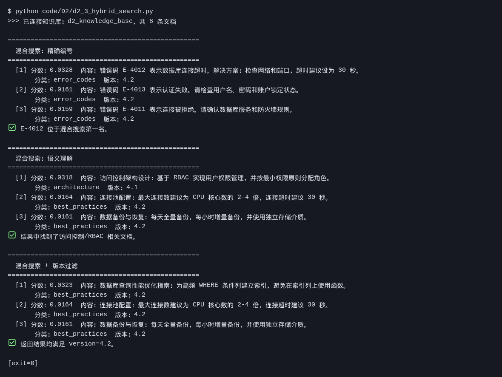

AI Native 数据层与 AI Functions
体验数据在 AI 应用里如何被承载，并尝试在数据库系统内部调用 AI。
任务要求
跑通 code/D2 的 d2_1 至 d2_5；通过 pyseekdb 执行 AI Function。
- D2 统一 AI Native 数据层实战
- I3 SQL × AI 与 AI Functions
实践成果与笔记
⏰ 截止时间：2026-09-26 03:00 📖 开发者篇 D2《统一 AI Native 数据层实战》+ 产业应用篇 I3《SQL × AI 与 AI Functions》
01 实践成果
代码跑通
Task 4 要求跑通 code/D2 的 d2_1 ~ d2_5（d2_1 / d2_2 在 Task 3 已跑过，本次补齐 d2_3 ~ d2_5，并一并复跑留证）。
| 脚本 | 做什么 | 结果 |
|---|---|---|
d2_1_ingest.py | 建知识库：8 条原始文档 → 切分 → 写入 seekdb | ✅ 原始 8 → 切分 8 → 存储 8 |
d2_2_vector_search.py | 纯向量搜索：语义查询 + 精确编号查询 | ✅ 两种查询均返回结果 |
d2_3_hybrid_search.py | 混合搜索：向量 + 全文，含版本过滤 | ✅ 三组查询全部命中 |
d2_4_compare.py | 纯向量 vs 混合搜索，三组查询对照 | ✅ 混合搜索稳定胜出 |
d2_5_chunking_compare.py | 分块策略对比：固定 / 动态 / 父子 | ✅ 三策略 Recall@3 出数 |
实测截图（真实终端原始输出）：

该图为脚本 stdout 的逐行原样渲染，未做概括或美化。
真实输出摘录
d2_3 混合搜索（三组查询）
$ python code/D2/d2_3_hybrid_search.py
>>> 已连接知识库：d2_knowledge_base，共 8 条文档
==================================================
混合搜索：精确编号
==================================================
[1] 分数：0.0328 内容：错误码 E-4012 表示数据库连接超时。解决方案：检查网络和端口，超时建议设为 30 秒。
分类：error_codes 版本：4.2
✅ E-4012 位于混合搜索第一名。
==================================================
混合搜索：语义理解
==================================================
[1] 分数：0.0318 内容：访问控制架构设计：基于 RBAC 实现用户权限管理，并按最小权限原则分配角色。
✅ 结果中找到了访问控制/RBAC 相关文档。
==================================================
混合搜索 + 版本过滤
==================================================
✅ 返回结果均满足 version=4.2。d2_5 分块策略对比
策略 块数 均长 Recall@3
--------------------------------------------
固定 overlap 5 186字 60%
动态 overlap 6 185字 100%
父子 chunk 9 104字 60%02 对照实验：混合搜索到底补了什么
d2_4_compare.py 用同一组查询分别走「纯向量」和「混合（向量 + 全文）」，差异很直观：
| 查询 | 纯向量第一名 | 混合搜索第一名 |
|---|---|---|
| 错误码 E-4012 的解决方案 | 恰好是 E-4012 | E-4012，分数更集中 |
| 怎么设计用户权限 | 连接池配置（跑偏） | 访问控制架构 RBAC ✅ |
| 数据库性能优化 | 连接池配置 | 数据库查询性能优化指南 ✅ |
两处跑偏都发生在「纯语义」这条路：查询词和文档用词不完全重合时，向量检索会被「数据库」这个大类语义带走，抓回一堆同主题但不对题的文档。混合搜索加入全文这一路后，精确词面命中把正确文档顶了上来。
我之前的理解是「混合搜索 = 更准」，跑完这一轮更想说：它补的不是精度，是另一条判断路径。向量靠语义相近，全文靠字面重合，两者分数体系不同（所以才有 RRF 比排名而不是比分数），互为兜底。单靠一路，遇到它盲区里的查询就会整条跑偏。
03 一个复现的坑：写入成功 ≠ 立刻可检索
这次复跑 d2_2 又撞上了 Task 3 记录过的那个现象：
d2_1写入后立即跑d2_2→ 第一条语义查询返回「（无结果）」；- 隔 5 秒重跑 → 三条结果正常返回。
两次实验现象一致，判断不变：collection.add() 返回时 ANN 向量索引尚未建好（异步构建），此刻查询命中 0。脚本那句「⚠️ 不能断言语义检索成功」属于假警报，不是检索质量问题。
有意思的是它和 d2_3 的对比：同时点下 d2_3 混合搜索却能正常出结果。合理推测是混合搜索那一路（全文检索）不依赖向量索引，先建好了，所以先有返回；等另一条路追上，混合结果才完整。
04 这次的体会
- 数据层是「多副面孔」的同一份数据。 同一条记录，既要有精确编号查询、又要有语义查询、还要有全文与版本过滤——不是选一种，是要能同时被这几种方式查到。这才是「AI Native 数据层」的意思。
- 调模型的顺序有讲究：先过滤、再召回、最后才调模型。 版本过滤在检索阶段就把范围收窄，模型只处理已经过筛的内容，省的是又慢又贵的调用。
- 分块策略与检索后端是两件事。
d2_5开头那句提示很关键：块怎么切，和用什么引擎去查，是两个独立变量。动态 overlap 在这组实验里 Recall@3 到 100%，但它胜在边界处理，不是「更聪明的检索」。 - 一个诚实记录： 语义分块这一路这次没跑成——需要
BAAI/bge-m3的 embedding，当前 API Key 无该模型权限，脚本已自动降级为内存检索并跳过语义分块。表里三行结果不含语义分块，属于已知缺失，不作推断。
创建：2026-09-25